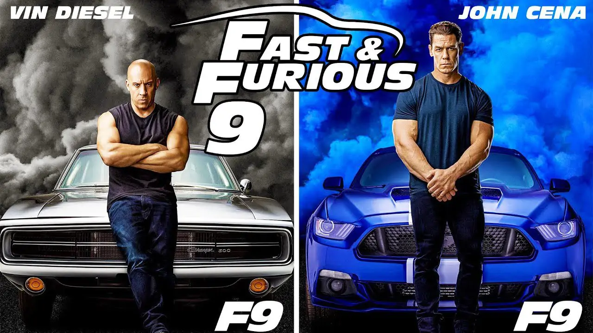

Fast and Furious 9 es una película de acción con elementos de ciencia ficción estadounidense de 2021 dirigida por Justin Lin, que también coescribió el guion con Daniel Casey. Es la secuela paralela de The Fate of the Furious (2017), la novena entrega principal y el décimo largometraje estrenado en total de la franquicia The Fast and the Furious.
El estreno de F9 estaba previsto originalmente para abril de 2019 en todo el mundo, pero se retrasó varias veces, primero debido a los estrenos de Hobbs & Shaw (2019) y No Time to Die (2021), y luego por la pandemia de COVID-19. Finalmente, se estrenó en Hong Kong y Corea del Sur el 19 de mayo de 2021, y en Estados Unidos el 25 de junio del mismo año. La película recibió críticas entre positivas y mixtas, con elogios para las actuaciones, los efectos visuales, las acrobacias y la dirección de Lin, pero algunas críticas por sus secuencias de acción poco realistas y su argumento formulista. Ha recaudado más de $726 millones en todo el mundo, lo que la convierte en la quinta película más taquillera de 2021.
Argumento
En 1989, Jack Toretto participa en una carrera de NASCAR, junto a sus hijos Dominic Toretto y Jakob Toretto en su equipo de pits. Dom discute con el corredor rival Kenny Linder sobre sus tácticas sucias. Al reanudar la carrera, el auto de Linder choca con el parachoques de Jack y hace que el auto se impacte contra un muro y explote, matándolo. Tras el accidente, Dom es arrestado después de casi matar a Linder a golpes con una llave inglesa (siendo este suceso en el que más tarde le contaría a Brian O'Conner en la primera entrega).
En el presente, dos años después del enfrentamiento contra la ciberterrorista Cipher, Dom está retirado, criando a su hijo Brian Marcos con su esposa Leticia "Letty" Ortiz. Pero un día mientras le enseña a su hijo como reparar el tractor de la granja, súbitamente aparece un auto sin previo aviso en su casa, por lo que Dom le pide a su hijo esconderse en el búnker secreto del granero y esperar, mientras que Dom y Letty se arman con armas de fuego para enfrentarse a los intrusos, pero resulta que solo se trataban de Roman "Rome" Pearce, Tej Parker y Megan Ramsey, los cuales se alegran de ver nuevamente a estos. Aclarado el asunto, Ramsey les informa que el agente Frank Petty, mejor conocido como Sr. Don Nadie, ha conseguido capturar a Cipher recientemente, pero en pleno vuelo de regreso a su base su avión terminó siendo atacado por agentes traidores y se ha estrellado en Montequinto. A Dom no parece importarle, decidido a dejar su antigua vida atrás, a pesar de que Rome le recordó que Cipher mató a Elena Neves, la madre de su hijo. En la noche, Letty se marcha para reunirse con el equipo y Dom acepta finalmente a ayudarles a encontrar al Sr. Don Nadie después de darse cuenta de que Jakob está involucrado. Registrando el avión, encuentran parte de un dispositivo llamado Ares, que puede hackear cualquier sistema de armas controlado por ordenador; el equipo es entonces emboscado por una fuerza militar sudamericana y un ejército privado dirigido por el propio Jakob. Durante la batalla, Rome se salva milagrosamente de morir en varias ocasiones, pero finalmente Jakob roba el dispositivo y huye del lugar en un avión magnético. El equipo se encuentra con Michael Stasiak (el antiguo compañero de Brian en el FBI), de camino a su casa segura. Mia, la hermana de Dom, llega con el deseo de ayudar, y Dom le permite unirse a ellos a regañadientes. El equipo se entera de que el ex miembro supuestamente fallecido Han Seoul-Oh tiene una conexión con Ares, y Letty y Mia van a Tokio a investigar.
SPOILERS DE LA ESCENA POST-CRÉDITOS DE FAST & FURIOUS 9
Una vez acaba la escena de los post-créditos, sale Jason Statham (Deckard Shaw) pegándole a un saco de boxeo cuando de repente lo abre y sale la cabeza de Otto toda destrozada pero aún con vida hasta que pican la puerta. Era Han, donde presuntamente había matado Shaw en Fast and Furious 6: Tokyo Race, en su ciudad natal, en un accidente de coche donde explota el propio coche con Han dentro (o eso nos habían hecho creer hasta esta película)
Reparto de la película
- Dom Toretto -> Vin Diesel
- Jacob Toretto -> John Cena
- Mia Toretto -> Jordana Brewster
- Letty Ortiz -> Michelle Rodriguez
- Roman Pearce -> Tyrese Gibson
- Tej Parker -> Ludacris
- Han Lue -> Sung Kang
- Cipher -> Charlize Theron
- Ramsey -> Nathalie Emmanuel
- Elle -> Anna Sawai